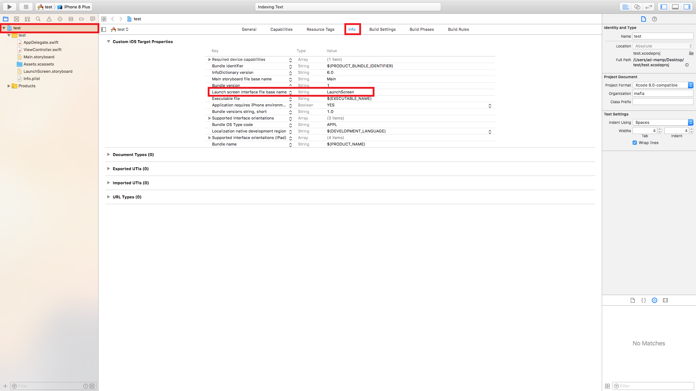
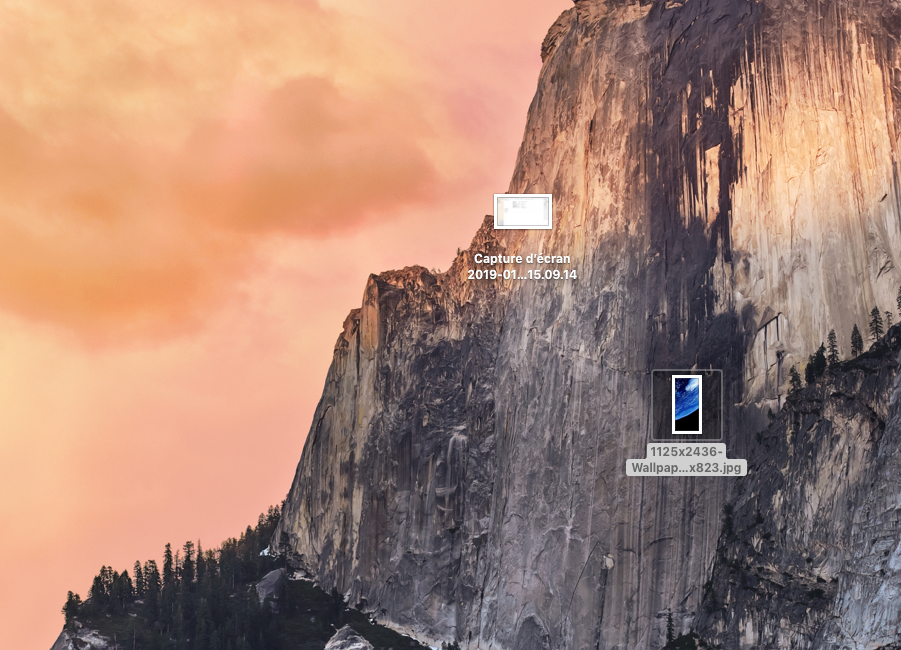
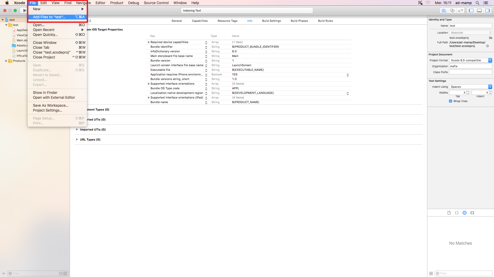
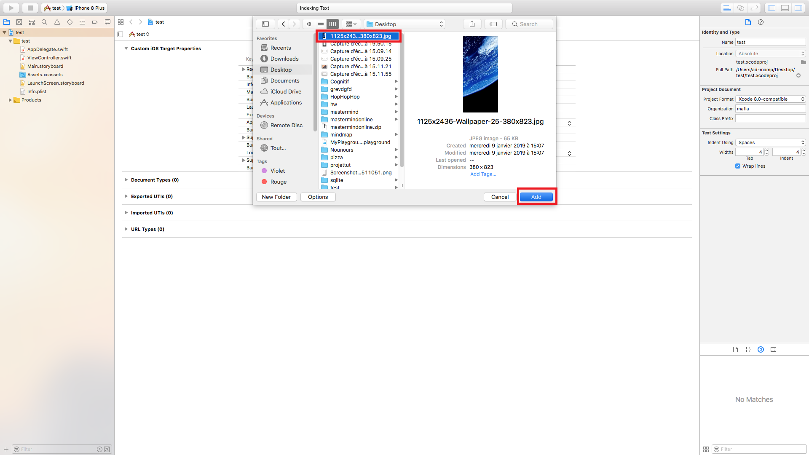
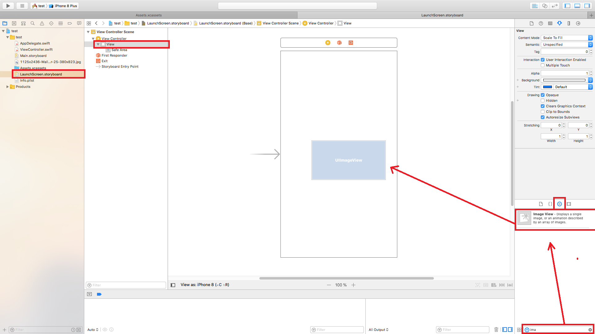
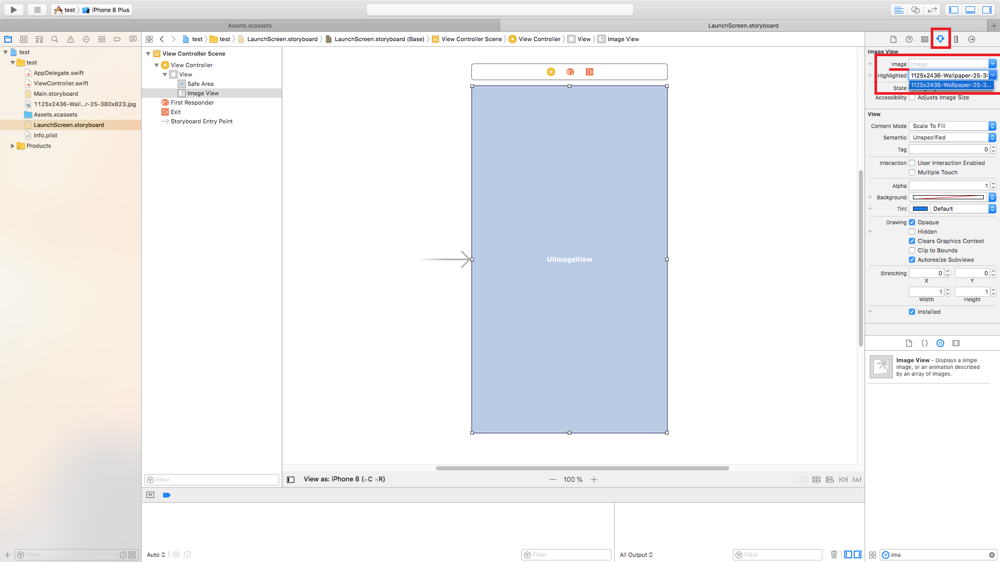
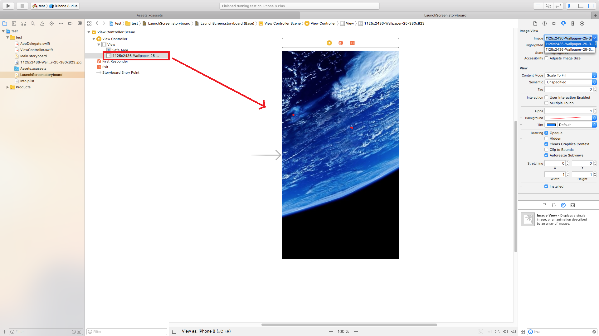
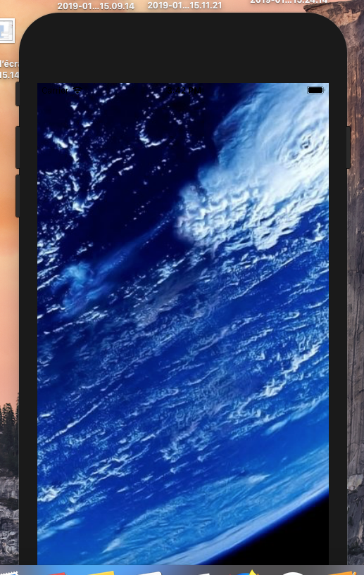

Vérifiez que l'interface de Launchscreen est bien attribuée au storyboard "LauchScreen".
Vérifiez que vous savez où l'image utilisée se trouve.
Allez dans Files, puis Add files to "projet", et ajouter votre image.
 Allez dans le fichier "LaunchScreen.storyboard" de votre projet. Dans le menu des objets, rechercher "image view". Sélectionnez la vue principale de votre View Controller, et glissez-déposez l'image view sur l'écran simulé.
Sélectionnez l'image view que vous venez de créer, et sélectionner votre image comme indiqué sur l'écran.
L'image devrait alors apparaitre sur votre simulation. Si celle ci n'apparait pas, glissez-déposez là sur votre vue.
Build votre application, et vérifiez que l'image apparait correctement sur votre simulateur.
